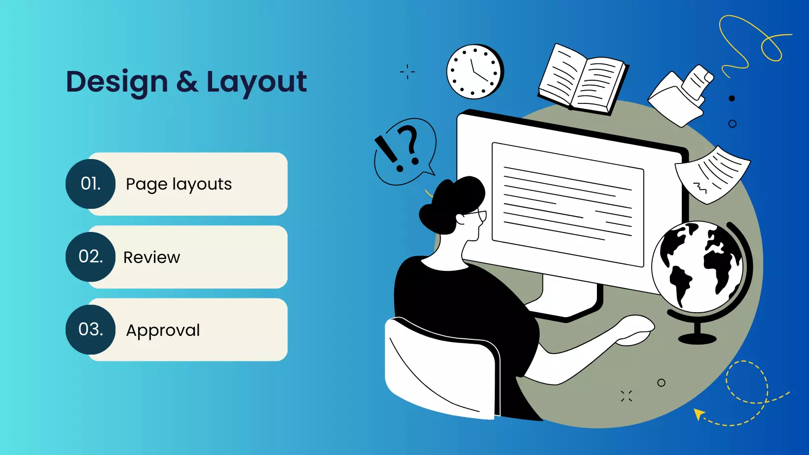

Design

At the design step of the process, style guides are often created. This includes a collection of different fonts, colors, and visuals that will be seen throughout the website. All images, graphics, and maybe even videos are created at this time.